Round 3: four directions, all grown from what worked in C
Round 1's C won on its look: all four round-1 mocks had identical copy. It had one huge serif sentence, a brand emblem, scarce amber and a calm, short page. Round 2 turned the page into a research report (about 2,500 words, with codes and footnotes), and all eight mocks shared one template. Round 3 goes back to C's restraint: 270–620 words per page, 6–9 phone screens, no codes above the fold. It adds what was missing: real project photography, the new brand kit, and the content plan's whole lifecycle from tender to site. Each mock differs in its hero, signature, typefaces, section order and buttons.
Background: why the previous 7 missed · 21 reference sites and the clichés to avoid · brief · copy
R3 · A · Emblem
Bold voice · closest to C
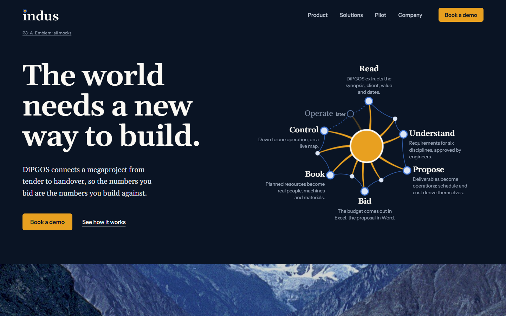
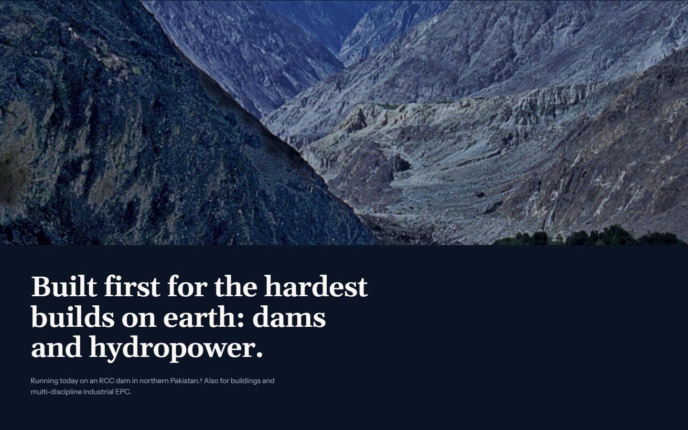
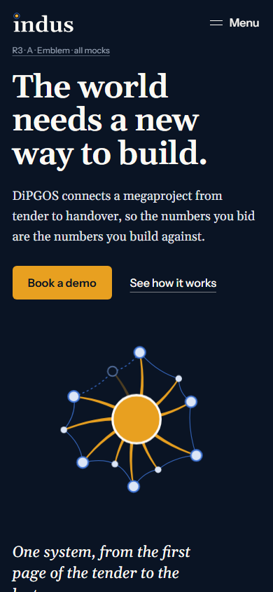
- Signature
- The DiPGOS mark is redrawn flat (amber beams, blue nodes, no glow). Its nodes are the six real lifecycle steps: Read, Understand, Propose, Bid, Book, Control. A seventh, Operate, is dimmed as "later". On load, the beams draw out of the core and the ring closes.
- Type
- Gelasio for display and reading text; Instrument Sans for the UI.
- Size
- About 275 words, 5 sections, 6 phone screens. The shortest page.
- Watch for
- It may feel thin; it's a manifesto page.
Open R3-A
R3 · B · Ground
Bold voice · photograph-led
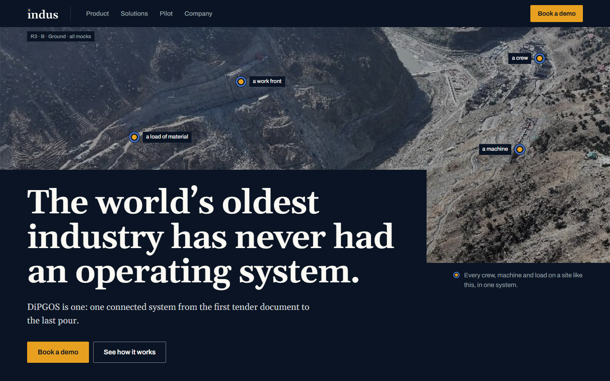
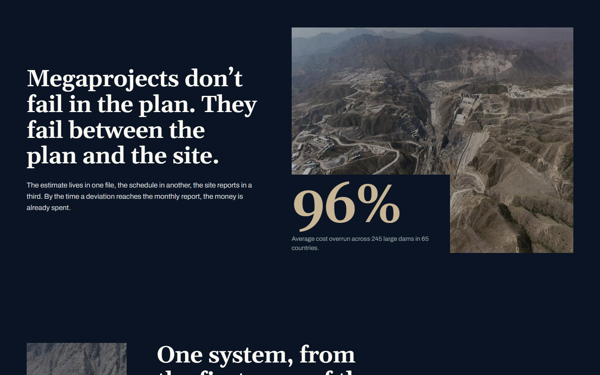
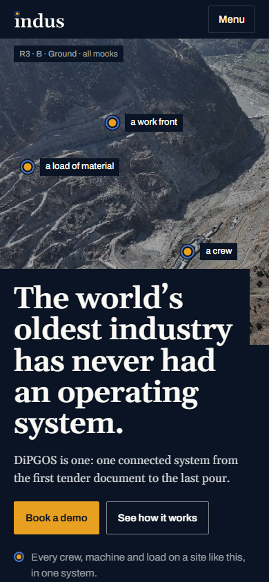
- Signature
- A real dam-site aerial is the hero. The Indus i-dot (an amber ball in a blue ring) is used as survey pins on real features: a work front, a load of material, a crew, a machine. "Every crew, machine and load on a site like this, in one system." No text sits on a photo; an ink block carries it.
- Type
- Gelasio, plus the Archivo grotesque. Colours are taken from the photos: rock, silt and river.
- Size
- About 500 words, 6 sections, 8 phone screens.
- Watch for
- The photos are graded fairly grey. "Named for the river our first projects are built on" is an assumption for you to confirm.
Open R3-B
R3 · C · One thread
Engineer voice · product walkthrough
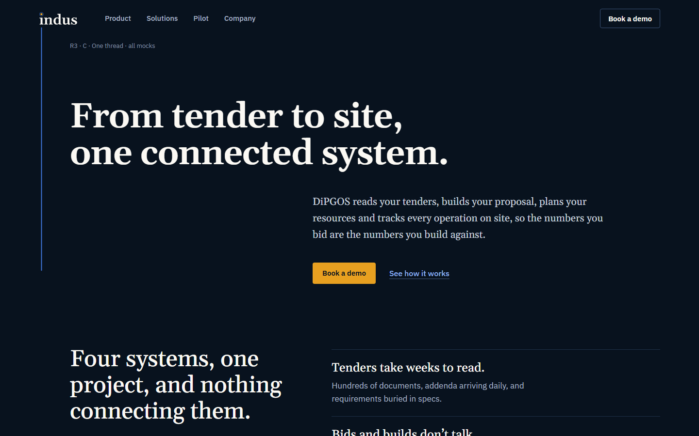
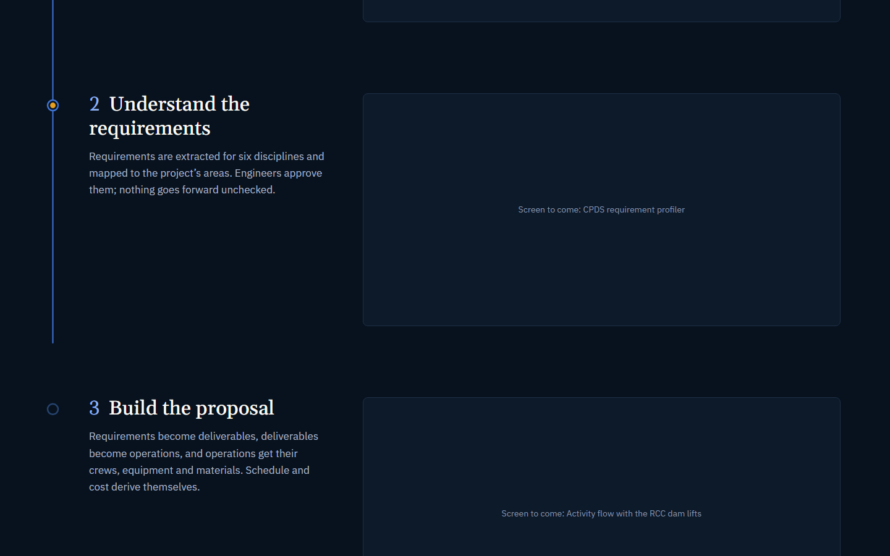
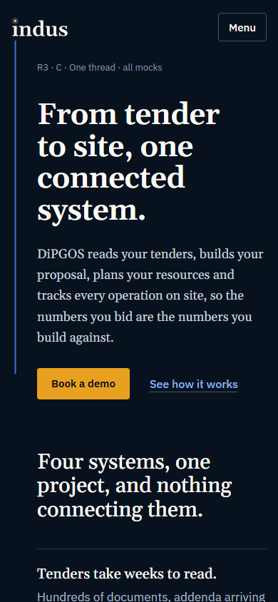
- Signature
- A blue line drops from the stem of the "i" in the Indus logo and runs down the page through the six steps, from tender to site. It draws as you scroll and lights an i-dot at each step, where a large product screen sits. The line is the "one connected system" claim.
- Type
- Gelasio, plus IBM Plex Sans.
- Size
- About 445 words, 5 sections, 8 phone screens.
- Watch for
- It needs your real screenshots most. With placeholder frames it looks emptier than it will.
Open R3-C
R3 · D · The clause
Engineer voice · typographic
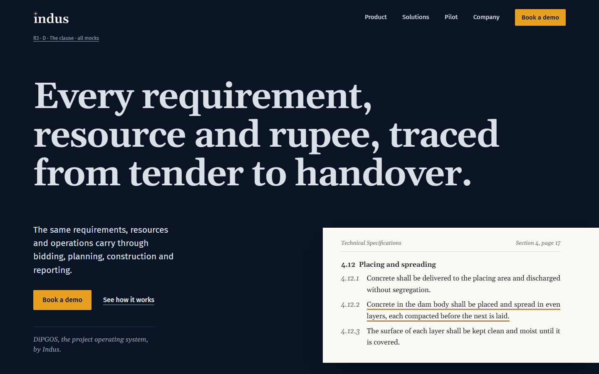
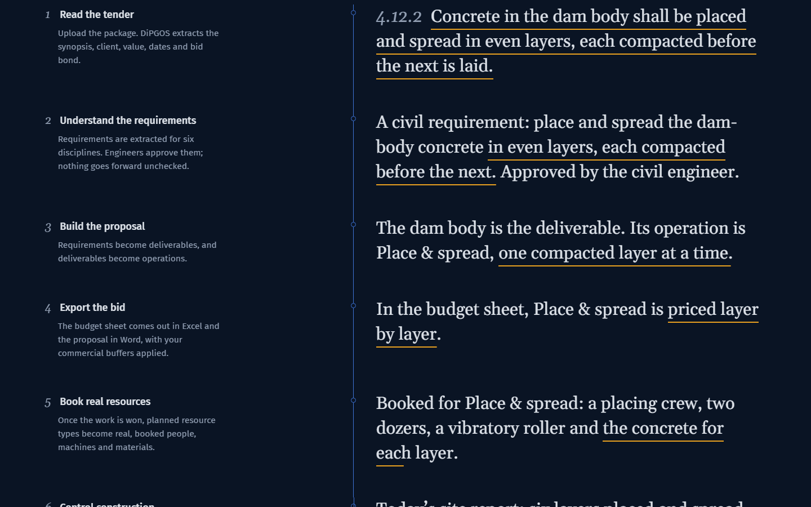
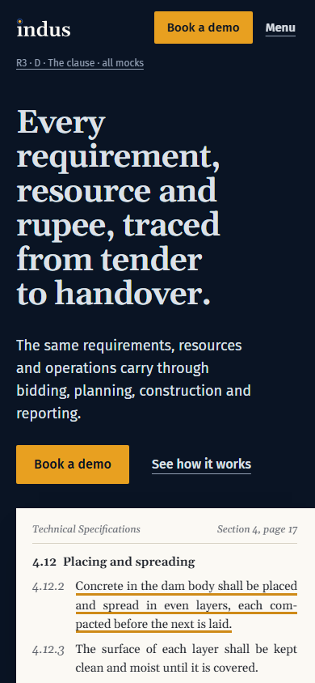
- Signature
- A tender page sits on the dark page as a paper object, with one clause underlined in amber. Scrolling down, that sentence is traced through the system: requirement, proposal, priced bid, booked crew and machines, and the day's site report checked against it.
- Type
- Gelasio, including the document; Fira Sans for the UI.
- Size
- About 615 words, 7 sections, 9 phone screens.
- Watch for
- The clause and crew are generic, invented examples. Name no project here until you approve one.
Open R3-D
Needed from you
- Which direction, or which parts of several, to take forward.
- Product screenshots for the placeholders: the ACCS project map, the RCC lifts activity flow, the Atom Manager catalogue, the CPDS requirement profiler and a Mutlashi answer with sources. Dark theme, 1920 wide.
- Photo rights: the aerials and river shots come from the DiPGOS image library. Can they go on a public site?
- Claims: can the site say "running on an RCC dam in northern Pakistan"? And is the company named after the river?